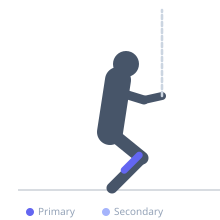
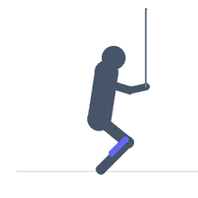

Exercise guide / Ankle Dorsiflexion Stretch — Wall with Band
Ankle Dorsiflexion Stretch — Wall with Band
A joint mobilization technique that combines a standard wall-supported ankle dorsiflexion stretch with a resistance band providing posterior traction on the talus (ankle bone). The band is looped around the ankle just above the malleolus, anchored behind the foot, and pulls the talus posteriorly as the exerciser drives the knee forward over the toes. This joint distraction improves the glide of the talus in the mortise and addresses the bony restriction component of limited dorsiflexion range, making it more effective than soft tissue stretching alone for many individuals.
Primary muscles
gastrocnemius medial
soleus
Secondary muscles
Equipment
Resistance Band (Loop / Mini Band)


Starting position
- Loop a stiff resistance band around the front of the ankle, just above the ankle bones. Anchor the other end of the band to a fixed point behind the foot at floor level (such as the base of a squat rack). Stand in a split stance with the banded foot forward, toes approximately 10-15 cm from a wall.
Setup
- Anchor the band behind the ankle so it pulls posteriorly (backward) as you shift your weight forward. Use a stiff, non-stretch band for best traction effect.
Steps
- Step 1: Position the band around the ankle and anchor behind. Place the toes 10-15 cm from a wall.
- Step 2: Drive the front knee forward toward the wall, keeping the heel flat on the floor.
- Step 3: Touch the knee to the wall and hold for 2-3 seconds, feeling the dorsiflexion range with the traction assist.
- Step 4: Return the knee to the starting position. Repeat, gradually moving the foot further from the wall as range improves.
Coaching cues
- Push the knee forward in line with the second toe — not inward or outward
- Feel the band pulling the ankle backward as the knee drives forward
- If the knee easily touches the wall, move the foot further away to increase the challenge
Breathing
- Exhale as you push the knee toward the wall. Breathe in the hold position.
Range of motion
- Drive the knee as far forward as the band and ankle allow while the heel stays flat.
Tempo
- 2-3s hold at end range per repetition. Perform 10-15 reps.
Common mistakes
- Allowing the heel to lift — the heel must stay flat for the full stretch to occur
- Using a band that is too light to create meaningful joint distraction
- Not anchoring the band low enough — the band must pull posteriorly at ankle level, not diagonally
Safety
- Avoid if you have acute ankle sprain (soft tissue must be assessed first before mobilization)
- The sensation should be joint opening, not pain — if pain increases, stop
Training
- mobility: 10–15 reps
- mobility: 2–3 sets
- Rest: {'mobility': 60}